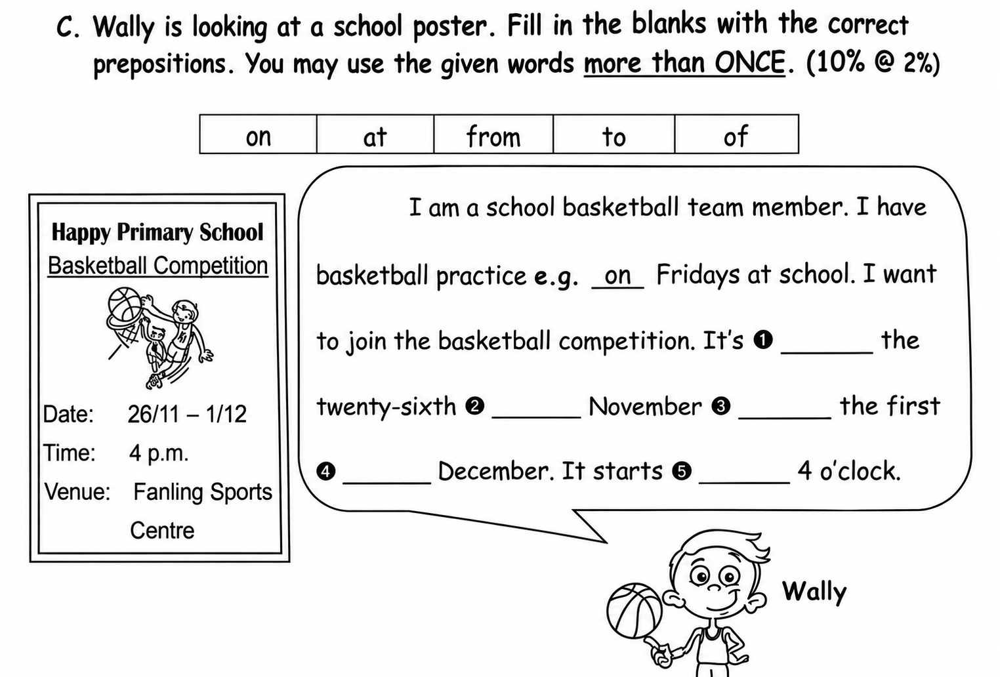

Answer: (a) 85320; (b) 20385
Explanation: 每张数字卡用一次。最大偶数按降序排列且个位为偶数，得 85320；最小奇数为 20385。原文答案 81320 含题目没有的数字 1，已纠正。
已掌握
| # | 单词/词组 | 中文意思 | 例句/说明 | 已掌握 |
|---|---|---|---|---|
| noun 名词 | ||||
| 1 | cream | 奶油 | I like cream on my cake. | |
| 2 | stamp | 邮票 | I put a stamp on the postcard. | |
| 3 | market | 市场 | There is a market near my home. | |
| 4 | train | 火车；训练 | We travelled to the city by train. | |
| 5 | forest | 森林 | Many animals live in the forest. | |
| 6 | flower | 花 | This flower is red. | |
| 7 | god | 神明 | Zeus was a god in Greek stories. | |
| verb 动词 | ||||
| 8 | visit | 参观；登录 | I visit the museum with my class. | |
| 9 | pick | 采摘；挑选 | We pick apples from the tree. | |
| preposition 介词 | ||||
| 10 | behind | 在……之后；在……后面 | The cat is behind the box. | |
| noun phrase 名词短语 | ||||
| 11 | school hall | 礼堂 | We sing together in the school hall. | |
| adjective 形容词 | ||||
| 12 | pretty | 漂亮的 | The flower is pretty. | |
| modal verb 情态动词 | ||||
| 13 | must | 必须 | You must finish your homework. | |
| 14 | mustn't | 禁止；不准 | You mustn't run in the classroom. | |
| possessive adjective 物主代词 | ||||
| 15 | their | 他们的 | Their bags are blue. | |
| verb phrase 动词短语 | ||||
| 16 | tell a story | 讲故事 | I tell a story to my little brother. | |
| question word 疑问词 | ||||
| 17 | which | 哪一个 | Which one do you like? | |
| uncategorized 未分类 | ||||
| 18 | office | 办公室 | The teacher is in her office. | |
| 19 | stand | 站立 | Please stand in a line. | |
| 20 | railway | 铁路 | The railway connects the two towns. | |
| # | 单词/词组 | 中文意思 | 例句/说明 | 已掌握 |
|---|---|---|---|---|
| adjective 形容词 | ||||
| 1 | true | 正确的 | The sentence is true. | |
| 2 | safe | 安全的 | This place is safe. | |
| 3 | different | 不同的 | Our bags are different colours. | |
| 4 | angry | 生气的 | Mum was angry because Jack sold the cow. | |
| 5 | wise | 明智的；聪明的 | The wise man gave good advice. | |
| noun 名词 | ||||
| 6 | bus | 公交车 | I go to school by bus. | |
| 7 | seed | 种子 | The bird pecks a seed. | |
| 8 | character | 角色；人物 | The story has many characters. | |
| 9 | stadium | 体育馆 | The game is in the stadium. | |
| 10 | clue | 线索 | This clue helps me. | |
| 11 | spelling | 拼写 | I checked the spelling of the word. | |
| 12 | knowledge | 知识 | Books give us knowledge. | |
| noun phrase 名词短语 | ||||
| 13 | police dog | 警犬 | The police dog is clever. | |
| 14 | country park | 郊野公园 | I want to go to the country park. | |
| 15 | a bowl | 碗 | Put the egg into a bowl. | |
| 16 | a pan | 平底锅 | Heat some butter in a pan. | |
| verb 动词 | ||||
| 17 | complete | 完成 | Please complete the sentence. | |
| 18 | train | 训练 | I train every day. | |
| 19 | illustrate | 说明；加插图 | The pictures illustrate the story. | |
| 20 | put | 放；放置 | Please put the vegetables into the pot. | |
| preposition 介词 | ||||
| 21 | opposite | 在......对面 | The library is opposite the school. | |
| verb phrase 动词短语 | ||||
| 22 | play the violin | 拉小提琴 | He wants to learn to play the violin. | |
| 23 | be interested in | 对……感兴趣 | I am interested in music. | |
| 24 | build a sandcastle | 堆沙堡 | Peter wants to build a sandcastle. | |
| 25 | look at shells | 看贝壳 | We look at shells on the beach. | |
| 26 | fly a kite | 放风筝 | We can fly a kite in the country park. | |
| 27 | have a buffet meal | 吃自助餐 | We have a buffet meal at the hotel. | |
| 28 | go to a flower market | 逛花市 | We go to a flower market before Chinese New Year. | |
| 29 | watch fireworks | 看烟花 | We watch fireworks in Tsim Sha Tsui. | |
| uncategorized 未分类 | ||||
| 30 | solve | 解决 | We can solve this problem together. | |
| # | 单词/词组 | 中文意思 | 例句/说明 | 已掌握 |
|---|---|---|---|---|
| time/date 时间日期 | ||||
| 1 | April | 四月 | April is the fourth month. | |
| 2 | October | 十月 | October is the tenth month. | |
| 3 | Tuesday | 星期二 | Tuesday is a weekday. | |
| 4 | Thursday | 星期四 | Thursday is a weekday. | |
| numbers 数字 | ||||
| 5 | six | 6 | Six is 6. | |
| 6 | eight | 8 | Eight is 8. | |
| 7 | eleven | 11 | Eleven is 11. | |
| 8 | twenty | 20 | Twenty is 20. | |
| 9 | forty | 40 | Forty is 40. | |
| 10 | sixty | 60 | Sixty is 60. | |
| solid shape 立体图形 | ||||
| 11 | cone | 圆锥 | A cone has one curved face. | |
| plane shape 平面图形 | ||||
| 12 | hexagon | 六边形 | A hexagon has six sides. | |
| geometry 几何 | ||||
| 13 | adjacent side | 邻边 | These are adjacent sides. | |
| 14 | right angle | 直角 | A right angle is 90 degrees. | |
| 15 | obtuse angle | 钝角 | An obtuse angle is greater than 90 degrees and less than 180 degrees. | |
| # | 单词/词组 | 中文意思 | 例句/说明 | 已掌握 |
|---|---|---|---|---|
| operations 运算 | ||||
| 1 | addition | 加法 | Addition means putting numbers together. | |
| 2 | subtraction | 减法 | Subtraction means taking away. | |
| 3 | carrying | 进位 | Carrying helps when the ones make ten. | |
| geometry 几何 | ||||
| 4 | angle | 角 | An angle is formed by two rays with the same endpoint. | |
| 5 | right angle | 直角 | A right angle is 90 degrees. | |
| 6 | acute angle | 锐角 | An acute angle is smaller than a right angle. | |
| 7 | grid | 网格 | A grid helps us find positions. | |
| question word 题目词 | ||||
| 8 | compare | 比较 | We compare two numbers. | |
| 9 | calculate | 计算 | Calculate the answer. | |
| 10 | estimate | 估计 | Estimate the answer first. | |
| 11 | match | 匹配 | Match the number to the word. | |
| 12 | respectively | 分别地 | Tom and Ben have 2 and 3 books respectively. | |
| answer 答案 | ||||
| 13 | correct | 正确的 | Choose the correct answer. | |
| comparison 比较 | ||||
| 14 | fewer | 更少 | There are fewer apples in this box. | |
| quantity 数量 | ||||
| 15 | pair | 双 | A pair means two things together. | |
| position 位置 | ||||
| 16 | behind | 后面 | The bag is behind the chair. | |
| 17 | back | 后面 | The desk is at the back of the room. | |
| operations calculation 运算 | ||||
| 18 | A times B | A✖️B | A times B means multiplication. | |
| 19 | mixed operations | 混合运算 | Mixed operations use more than one operation. | |
| 20 | equally | 平等地 | Share the apples equally. | |
| 21 | dividend | 被除数 | The dividend is divided by the divisor. | |
| 22 | column form | 竖式形式 | Write it in column form. | |
| currency money 货币 | ||||
| 23 | note | 纸币 | This is a five-dollar note. | |
| 24 | change | 零钱 | Count the change after paying. | |
| 25 | expensive | 昂贵的 | This toy costs $50. It is more expensive than the $20 toy. | |
| measurement 测量 | ||||
| 26 | centimetre | 厘米 | A centimetre is a small unit of length. | |
| 27 | measure | 测量 | We measure the length with a ruler. | |
| 28 | distance | 距离 | Find the distance between the two points. | |
| data charts 统计图 | ||||
| 29 | pictogram | 象形图 | Read the pictogram. | |
| 30 | block chart | 方块图 | Read the block chart. | |

